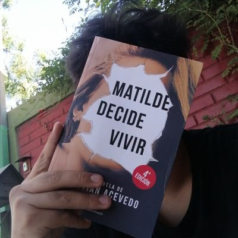

Tomás Cabrolier
también TeocEstudio Pedagogía en Educación Básica. Fuera del aula escribo fantasía, programo juegos y leo el tarot con dos barajas: una de luz y una de sombra. Esta página también tiene las dos.
Elige una carta para entrar.
Siete arcanosUn área en cada carta
Pasa el cursor por una para leerla.
Algunos trabajos
Una muestra de distintas áreas. Cada carta guarda el resto.

Sobre mí
Estoy en cuarto año de Pedagogía en Educación Básica y hago mi práctica en séptimo básico. Me gusta diseñar material que los estudiantes quieran usar: escape rooms, generadores, guías interactivas.
También trabajo en una tienda de velas, escribo fantasía, programo en Unity, Godot, Java y Python, y con Francisco llevamos Digital Monster, nuestro estudio indie.